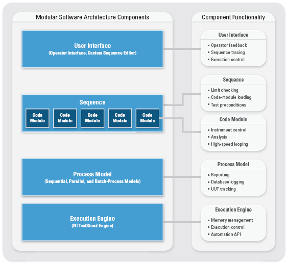
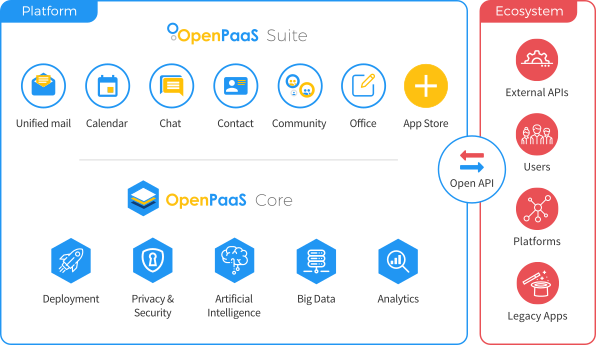

OpenTechSummit Vietnam 2019
Modular architectures in software development

Speaker : Lê Công Tuấn
### About me
- Software engineer in [Linagora](https://linagora.com/)
- Team leader
- Web development (Javascript fullstack)
- Github: tuanlc
- Twitter: tlcong
Outline
- Modular architectures
- Modular architecture in OpenPaaS
- Questions & Discussions
Linagora
- French open source software development company. https://github.com/linagora
- Gives organization control on their internal communications
- Present in France, Vietnam, Tunisia and Canada
- OBM, OpenPaas, LinShare, LinId, etc..
In Hanoï
Since april 2015
Initiative like Open-Up! and La French Tech
Opportunities:
- Developer Java, Scala, Android or JS
- System administrator
Traditional Layered Architecture
Problems
- Code becomes hard to understand & maintain
- A small change can effect to the whole system
- Testing becomes hard & expensive
- Developer start to freak out & get demotivated
Modular Architectures

A way to develop & manage an application by decompose it into reusable logical modules & components
Goals
- Understanding and Debugging source code
- Speed up time to develop a new feature
- Maintenance
- Teams work independently
- Plug on demand
### Modularity in OpenPaaS
OpenPaaS

Open Platform: mail, agenda, contact, chat, file sharing & editing, etc...
Awesome Modules
- OpenPaaS Modules
- Come on top of classic NPM modules
- With modules, you can:
- Add pages, or widgets, into the ESN web interface
- Add REST endpoints, that third party applications will be able to query
- Expose objects and services to other modules

- Modules loader: https://github.com/linagora/awesome-module-manager
- Plug/Unplug modules in 2 easy steps
* Step 1: Install the modules as a NPM dependencies
```json
{
"name": "linagora-rse",
"description": "Linagora RSE",
"main": "index.js",
"dependencies": {
"linagora.esn.contact": "linagora/linagora.esn.contact",
"linagora.esn.calendar": "linagora/linagora.esn.calendar",
...
}
...
```
* Step 2: Load the modules:
```json
{
"app": {
"name": "Linagora ESN"
},
"modules": [
"linagora.esn.calendar",
"linagora.esn.contact",
...
]
}
```
Communicate among OpenPaaS modules
Core Registries

- Core defines registries for generic concepts
- Modules register their logics and configurations
- Modules can read other module configurations from core registries
```javascript
modules.exports = {
register,
getAll,
getByKey
}
```
* Advantages:
- Modules completly independent
- Apply for both backend and frontend
* Drawback: Only apply for generic concepts but not for specific modules
Dynamic directives
Create an anchor element where other modules can inject their parts to
* Advantages:
- Handle specific cases
* Drawback:
- Modules are not independent
- Only for frontend
Connected modules
- Having a connected module among modules
- Modules:
```javascript
linagora.esn.unifiedinbox
linagora.esn.james
```
- Connected modules:
```
linagora.esn.unifiedinbox.james
```
* Advantages:
- Handle specific cases
- Apply for both backend and frontend
* Drawback:
- Modules depend on each other
- Create one more connected module to connect modules